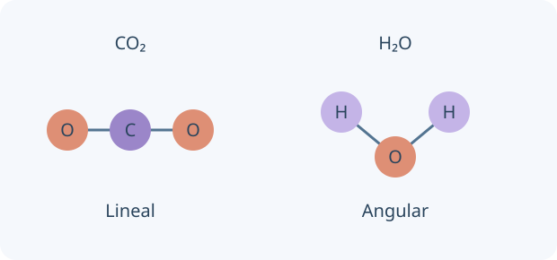

Los electrones de valencia son los que más directamente intervienen en enlaces del modelo básico. Una estructura de Lewis los representa como pares y electrones no compartidos. Es un instrumento de conteo y conectividad, no una fotografía exacta de posiciones electrónicas.

Conectividad y forma no son lo mismo. Geometrías esquemáticas; longitudes y ángulos no están a escala.
Un enlace covalente comparte densidad electrónica; una red iónica se estabiliza por atracciones entre iones. Los dibujos de Lewis cuentan electrones de valencia y muestran pares enlazantes y libres. Sumá electrones si la especie es anión y restá si es catión.
Una estructura correcta respeta el total de electrones y, cuando corresponde, octetos. El hidrógeno completa dos. La energía para romper un enlace es positiva; formar el mismo enlace libera energía. La reactividad de óxidos e hidruros se interpreta con su estructura y con el elemento, no solo con un nombre de familia.
Electrones totales = suma de valencias − carga algebraica
TU TURNO · INTENTÁ RESOLVER ANTES DE MIRAR
Dibujá H₂O: O aporta 6 electrones y dos H aportan 2.
Tu desafío: Contá electrones y dibujá enlaces y pares libres en una estructura de Lewis del agua.
Ver el ejemplo resuelto paso a paso
Total: 8. Dos enlaces O–H usan 4 electrones.
Los 4 restantes son dos pares libres del oxígeno.
LECCIÓN 2 / 4 · LEÉ, RESOLVÉ Y COMPROBÁ
Predecir forma con TREPEV
Empezá desde la idea.
La conectividad no alcanza para describir la forma de una molécula. Contá regiones electrónicas alrededor de un átomo central y buscá cómo separarlas. Un enlace múltiple cuenta como una región en TREPEV, mientras los pares libres también influyen en la disposición.
Las regiones de densidad electrónica alrededor del átomo central se orientan para reducir repulsiones. Dos regiones dan disposición lineal; tres, trigonal plana; cuatro, tetraédrica. Un enlace doble cuenta como una región al identificar la disposición general.
La geometría molecular nombra posiciones de átomos; la electrónica incluye pares libres. NH₃ es piramidal y H₂O angular aunque ambos tengan disposición electrónica aproximadamente tetraédrica. Los pares libres suelen comprimir ángulos respecto de 109,5°.
AX₂: lineal · AX₃: trigonal plana · AX₄: tetraédrica
TU TURNO · INTENTÁ RESOLVER ANTES DE MIRAR
CO₂ tiene dos enlaces dobles alrededor del C y ningún par libre central.
Tu desafío: Compará las regiones electrónicas y la forma molecular de CO₂ con las de H₂O.
Ver el ejemplo resuelto paso a paso
Son dos regiones: disposición lineal, ángulo 180°.
En H₂O hay cuatro regiones, dos libres: forma angular, aproximadamente 104,5°.
LECCIÓN 3 / 4 · LEÉ, RESOLVÉ Y COMPROBÁ
De la polaridad a la ebullición
Empezá desde la idea.
Distinguí los enlaces dentro de una molécula de las atracciones entre moléculas. Hervir un líquido molecular normalmente separa moléculas sin descomponerlas en átomos. La energía necesaria depende de las interacciones, del tamaño y de la forma, entre otros factores.
La polaridad molecular depende de enlaces y geometría. En CO₂ los dipolos se cancelan por simetría; en H₂O no. Todas las especies presentan dispersión de London; las polares también pueden presentar interacciones dipolo-dipolo.
Un H unido a N, O o F puede participar en enlace hidrógeno con un par libre apropiado. Al hervir una sustancia molecular se vencen interacciones entre moléculas, no se rompen todos sus enlaces covalentes. Mayor tamaño y polarizabilidad suelen aumentar London al comparar especies semejantes.
Polaridad molecular = suma vectorial de dipolos de enlace
TU TURNO · INTENTÁ RESOLVER ANTES DE MIRAR
HF y HCl son moléculas polares.
Tu desafío: Usá interacciones intermoleculares para explicar por qué la masa molar sola no ordena su ebullición.
Ver el ejemplo resuelto paso a paso
HF forma enlaces hidrógeno fuertes en su líquido; HCl no tiene H unido a N, O o F.
Por eso la masa molar sola no permite ordenar siempre puntos de ebullición.
LECCIÓN 4 / 4 · LEÉ, RESOLVÉ Y COMPROBÁ
Explicar tendencias periódicas
Empezá desde la idea.
La tabla periódica permite comparar estructuras electrónicas. Al bajar en un grupo aparecen capas más externas y mayor apantallamiento. Analizá qué electrón se pierde o gana: no basta con contar protones del núcleo para predecir la facilidad de un proceso.
En un período, el aumento de carga nuclear efectiva suele reducir el radio de los átomos representativos. Al bajar por un grupo se agregan capas y suele aumentar el radio. Un catión suele ser menor que su átomo; un anión, mayor.
Los puntos de fusión dependen del tipo de estructura: molecular, iónica, metálica o red covalente. No existe una única flecha de la tabla que ordene todas las temperaturas. Para comparar, justificá qué partículas y qué interacciones se separan al fundir.
Misma capa: mayor atracción nuclear efectiva → radio generalmente menor
TU TURNO · INTENTÁ RESOLVER ANTES DE MIRAR
Compará Na y Cl en el mismo período.
Tu desafío: Predecí cuál tiene menor radio atómico y explicá la tendencia con atracción nuclear efectiva.
Ver el ejemplo resuelto paso a paso
Cl tiene mayor carga nuclear efectiva sobre sus electrones de valencia.
Su radio atómico es menor; esto no implica que Na⁺ sea mayor que Cl⁻.
02
PREDECÍ · INVESTIGÁ · EXPLICÁ
La química en tus manos.
Cargando la mesa de trabajo…
03
LISTO PARA PONER A PRUEBA TU COMPRENSIÓN
Repasá y encontrá qué volver a estudiar.
Ocho preguntas por unidad, con explicación y enlace a la lección correspondiente. Estos resultados se guardan únicamente en este navegador; no se envían al panel docente.